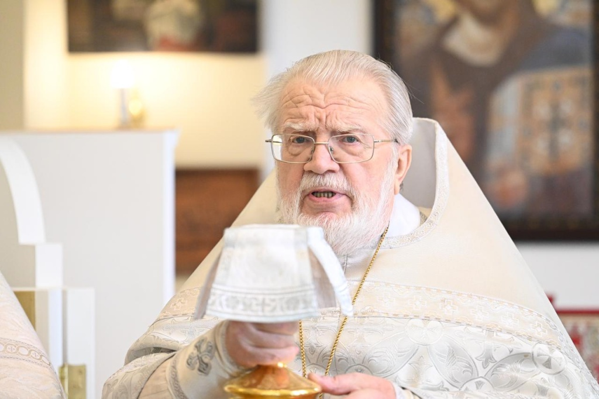

Храм Святителя Луки
Домовой храм Клинической больницы Святителя Луки
Церковь в стенах больницы
С 11 марта 2015 года в СПб ГБУЗ Клинической больнице Святителя Луки открыта походная церковь во имя Святителя Луки, профессора медицины В.Ф. Войно-Ясенецкого.
В 2023 году открыт домовой храм святителя Луки Войно-Ясенецкого, где все желающие могут принять участие в богослужениях, проводятся причастие, исповедь и другие таинства Церкви.
Святитель Лука (Войно-Ясенецкий)
Хирург, профессор медицины и духовный писатель
Архиепископ Лука (в миру Валентин Феликсович Войно-Ясенецкий; 27 апреля (9 мая) 1877, Керчь — 11 июня 1961, Симферополь) — хирург, профессор медицины и духовный писатель, епископ Русской Православной Церкви; с апреля 1946 года — архиепископ Симферопольский и Крымский. Лауреат Сталинской премии первой степени (1944) за труд «Очерки гнойной хирургии».
Архиепископ Лука стал жертвой сталинских репрессий и провёл в ссылках и тюрьмах в общей сложности 11 лет. Реабилитирован в апреле 2000 года. Украинская Православная Церковь Московского Патриархата причислила архиепископа Луку к лику местночтимых святых 22 ноября 1995 года. В августе 2000 года канонизирован Русской Православной Церковью в сонме новомучеников и исповедников Российских для общецерковного почитания; память — 29 мая (11 июня).
Приход Святителя Луки
Приход Святителя Луки возглавляет протоиерей Константин Смирнов, настоятель храма Спаса Нерукотворного Образа на Конюшенной площади. Именно по совету отца Константина в 2006 году больница официально стала называться в честь святителя Луки — небесного покровителя медиков.
Духовное окормление пациентов клиники совершает иерей Сергий Потёмкин.
Галерея
Храм Святителя Луки в фотографиях
